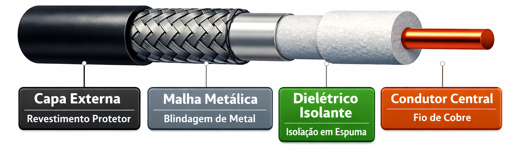
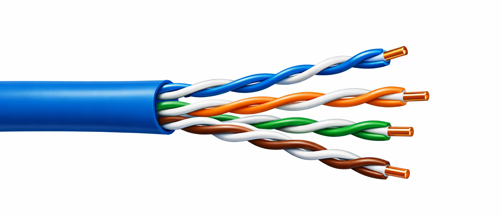
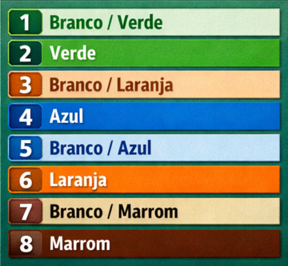
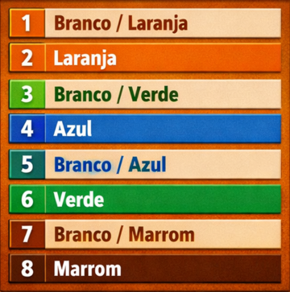

Infraestrutura Física de Redes
Aula 06 - Fundamentos da Transmissão e Meios Guiados
1. Por que Estudar os Meios de Transmissão
Nas aulas anteriores construímos o entendimento de como os dados são organizados, endereçados e roteados - os modelos OSI e TCP/IP, o endereçamento IP, os protocolos. Tudo isso é a lógica da rede.
Agora chegamos à camada mais concreta: o meio físico pelo qual os bits realmente trafegam.
Por mais sofisticado que seja o protocolo, por mais bem configurado que esteja o roteador, a comunicação depende fundamentalmente do meio que transporta o sinal. Um cabo da categoria errada, instalado além da distância permitida ou num ambiente com interferência excessiva, degrada ou derruba a comunicação - independentemente de qualquer configuração de software.
É aqui que o trabalho do técnico de infraestrutura se torna visível e concreto. A escolha do meio correto para cada situação, a instalação dentro das especificações técnicas e o respeito às normas determinam diretamente a qualidade da rede que o usuário vai experimentar.
O meio físico é a fundação. Tudo o mais é construído sobre ele.
2. Conceitos Fundamentais da Transmissão
Antes de estudar os meios em si, é necessário entender os conceitos que descrevem e medem a qualidade de qualquer canal de transmissão. Esses termos aparecem nas especificações de todos os cabos, equipamentos e normas que serão estudados ao longo do curso.
Largura de Banda
A largura de banda é a capacidade máxima teórica de um canal de transmissão - a quantidade máxima de dados que ele pode transportar por unidade de tempo, em condições ideais.
É medida em bits por segundo (bps) e seus múltiplos: Kbps, Mbps, Gbps, Tbps.
Analogia: a largura de banda é como a largura de uma rodovia. Uma rodovia de 8 faixas tem capacidade para muito mais veículos simultâneos do que uma de 2 faixas - independentemente de quantos carros estão passando naquele momento.
Importante: largura de banda é capacidade, não velocidade. Um cabo Cat6 tem largura de banda de 250 MHz - isso define o potencial do canal, não a velocidade real da transferência em dado momento.
Throughput
O throughput é a taxa de transferência real e efetiva - a quantidade de dados que realmente trafega pelo canal num dado momento, considerando todas as limitações práticas: congestionamento, overhead de protocolos, erros e retransmissões.
O throughput é sempre menor ou igual à largura de banda. Na prática, uma rede Gigabit Ethernet (1 Gbps de largura de banda) raramente entrega mais de 900-950 Mbps de throughput real, devido aos cabeçalhos dos protocolos e outros fatores.
Analogia: se a largura de banda é a capacidade da rodovia, o throughput é o fluxo real de veículos circulando naquele momento - que pode ser muito menor que a capacidade máxima se houver acidentes, obras ou congestionamento.
Latência
A latência é o tempo que um dado leva para percorrer o caminho da origem ao destino. É medida em milissegundos (ms).
Baixa latência é crítica em aplicações sensíveis ao tempo real: videoconferências, jogos online, VoIP, sistemas de controle industrial. Uma rede com alta largura de banda mas alta latência pode ser frustrante para essas aplicações - os dados chegam em quantidade, mas chegam tarde.
Analogia: latência é o tempo de viagem de um veículo de uma cidade a outra - independentemente de quantos veículos a rodovia comporta.
Atenuação
A atenuação é a perda de intensidade do sinal ao longo do meio de transmissão. Todo sinal se enfraquece à medida que percorre distâncias maiores - seja um sinal elétrico num cabo de cobre, um pulso de luz numa fibra óptica ou uma onda de rádio no ar.
A atenuação é medida em decibéis (dB). Quanto maior a distância, maior a atenuação. Quando o sinal se atenua demais, o equipamento receptor não consegue mais interpretá-lo corretamente - surgem erros, retransmissões e, eventualmente, perda total de comunicação.
É a atenuação que define os limites de distância de cada tipo de cabo. O limite de 100 metros do par trançado, por exemplo, existe porque além dessa distância a atenuação compromete a qualidade do sinal.
Analogia: é como o volume de uma conversa à distância. Perto, ouve-se claramente. Conforme a pessoa se afasta, a voz vai enfraquecendo até se tornar ininteligível.
Ruído e Interferência
Ruído é qualquer sinal indesejado que se mistura ao sinal original, dificultando sua interpretação. Pode ter origem térmica (agitação dos elétrons no condutor), elétrica (equipamentos próximos) ou eletromagnética (campos gerados por outros cabos, motores, transformadores, lâmpadas fluorescentes).
Interferência eletromagnética (EMI) e interferência por radiofrequência (RFI) são as formas mais comuns de ruído em ambientes de rede. Motores elétricos, geradores, fontes de alimentação e até cabos de energia elétrica paralelos podem induzir sinais indesejados nos cabos de dados.
Crosstalk é um tipo específico de interferência que ocorre entre pares de fios dentro do mesmo cabo - o sinal de um par "vaza" para o par vizinho. É um dos principais problemas em cabos de par trançado e será abordado em detalhe ainda nesta aula.
Relação Sinal/Ruído (SNR)
A relação sinal/ruído (Signal-to-Noise Ratio - SNR) expressa a diferença entre a intensidade do sinal útil e a intensidade do ruído presente no canal. É medida em decibéis (dB).
Quanto maior o SNR, melhor a qualidade do canal - o sinal útil é muito mais forte que o ruído, facilitando a interpretação correta dos dados. Um SNR baixo indica que o ruído está se aproximando do nível do sinal, aumentando a probabilidade de erros.
O técnico de infraestrutura não precisa calcular o SNR no dia a dia - mas precisa entender que instalar cabos de dados paralelos a cabos de energia elétrica, próximos a motores ou em ambientes industriais sem a blindagem adequada degrada o SNR e compromete o desempenho da rede.
3. Meios Guiados vs. Meios Não Guiados
Os meios de transmissão se dividem em duas grandes categorias, definidas pela forma como o sinal se propaga:
Meios guiados são aqueles em que o sinal é conduzido por um caminho físico confinado - um cabo. O sinal não se dispersa pelo ambiente; ele percorre o condutor de uma extremidade à outra. Exemplos: par trançado, fibra óptica, cabo coaxial.
Meios não guiados são aqueles em que o sinal se propaga livremente pelo ambiente - geralmente pelo ar, na forma de ondas eletromagnéticas. Não há cabo; o sinal irradia em todas as direções (ou é direcionado por antenas). Exemplos: Wi-Fi, Bluetooth, redes celulares, comunicação por satélite.
| Característica | Meios Guiados | Meios Não Guiados |
|---|---|---|
| Velocidade | Muito alta (até Tbps na fibra) | Alta, mas menor que cabos modernos |
| Distância | Limitada pelo cabo (variável) | Variável - pode ser global (satélite) |
| Interferência | Baixa (contida no cabo) | Alta (ambiente aberto) |
| Segurança física | Alta (difícil interceptar) | Baixa (sinal acessível no ar) |
| Mobilidade | Nenhuma | Total |
| Custo de instalação | Maior (infraestrutura física) | Menor (sem cabos) |
| Confiabilidade | Alta | Variável (depende do ambiente) |
Para redes locais corporativas e institucionais, os meios guiados - especialmente o par trançado e a fibra óptica - continuam sendo a escolha dominante por oferecerem desempenho, confiabilidade e segurança superiores. O wireless complementa a infraestrutura cabeada, especialmente para dispositivos móveis, mas raramente a substitui em ambientes que exigem alto desempenho.
4. Cabo Coaxial - Visão Panorâmica
O cabo coaxial foi o meio dominante nas redes locais dos anos 1980 e início dos anos 1990, antes de ser substituído pelo par trançado. Hoje seu uso em redes de dados é residual, mas ele permanece presente em outras aplicações importantes.
Construção Física
O cabo coaxial é construído em camadas concêntricas - daí o nome "co-axial" (mesmo eixo):

- Condutor central: fio de cobre sólido ou trançado que transporta o sinal
- Dielétrico: material isolante (geralmente polietileno) que separa o condutor central da malha
- Malha metálica: condutor externo que funciona simultaneamente como retorno do circuito e blindagem contra interferência eletromagnética
- Capa externa: proteção mecânica de PVC ou similar
A malha metálica é o que dá ao coaxial sua excelente imunidade a interferências - ela envolve completamente o condutor central, bloqueando campos eletromagnéticos externos.
Tipos Principais
| Tipo | Impedância | Aplicação |
|---|---|---|
| RG-58 | 50 Ω | Redes Ethernet 10Base2 (legado) |
| RG-59 | 75 Ω | CFTV analógico, TV a cabo (legado) |
| RG-6 | 75 Ω | TV a cabo, internet via cabo, CFTV HD |
| RG-11 | 75 Ω | Longas distâncias em TV a cabo e CFTV |
Uso Atual
Embora tenha desaparecido das redes locais de dados, o cabo coaxial ainda é amplamente usado em:
- CFTV (Circuito Fechado de TV): câmeras analógicas e sistemas HD-CVI/TVI/AHD ainda usam coaxial RG-59 e RG-6
- TV a cabo e internet via cabo (HFC): operadoras usam coaxial RG-6 no trecho final até a residência do cliente
- Antenas: conexão entre antenas externas e receptores de TV e rádio
Por que Foi Substituído nas Redes Locais
O par trançado substituiu o coaxial em redes locais pelos seguintes motivos:
- Topologia: o coaxial exigia topologia de barramento - todos os dispositivos no mesmo cabo, o que causava colisões e tornava a rede lenta. O par trançado permite topologia estrela com switches.
- Custo: o par trançado é significativamente mais barato
- Instalação: mais fácil de instalar, organizar e manter
- Desempenho: o par trançado moderno suporta velocidades muito superiores
5. Par Trançado - O Meio Dominante em Redes Locais
O cabo de par trançado é o meio de transmissão mais utilizado em redes locais no mundo. Está presente em praticamente toda instalação de rede - de residências a grandes datacenters - e é o objeto central do trabalho do técnico de infraestrutura.
Construção Física
O cabo de par trançado é composto por pares de fios de cobre, onde cada fio é individualmente isolado por uma capa colorida de PVC. Os dois fios de cada par são trançados entre si ao longo de todo o comprimento do cabo. Um cabo padrão para redes locais contém 4 pares (8 fios no total).

Por que os Pares São Trançados - O Cancelamento de Interferência
O trançamento não é estético - é a principal defesa do cabo contra interferências. O princípio é chamado de cancelamento por torção (twist cancellation):
Quando dois fios paralelos transportam sinais elétricos, qualquer campo eletromagnético externo induz o mesmo ruído nos dois fios. Se os fios estiverem trançados, a interferência induzida num ponto do cabo é de polaridade oposta à induzida meio giro adiante - e as duas se cancelam mutuamente ao longo do comprimento do cabo.
O mesmo princípio elimina o crosstalk: o campo magnético gerado pelo sinal de um par induziria ruído no par vizinho se os fios fossem paralelos. Com o trançamento, as induções se cancelam.
Quanto mais torções por metro, maior a proteção. É por isso que cabos de categorias superiores têm mais torções por centímetro - e por isso que nunca se deve destrançar mais do que o necessário ao terminar um conector.
Regra prática: ao crimpar um conector RJ-45, o máximo permitido de cabo destrançado é 13 mm. Exceder isso compromete o desempenho do cabo, especialmente em categorias superiores.
Tipos de Blindagem
A blindagem adiciona proteção extra contra interferências externas, além do cancelamento por torção. Existem quatro configurações principais:
UTP - Unshielded Twisted Pair (Par Trançado Sem Blindagem): Sem nenhuma blindagem adicional além do trançamento. É o tipo mais comum e mais barato. Adequado para a maioria dos ambientes de escritório e residencial onde a interferência eletromagnética é baixa.
FTP - Foiled Twisted Pair (Par Trançado com Folha): Uma folha de alumínio envolve todos os 4 pares juntos, internamente à capa externa. Oferece proteção contra interferências externas (EMI/RFI), mas não contra crosstalk entre pares. Também chamado de F/UTP na nomenclatura ISO/IEC.
STP - Shielded Twisted Pair (Par Trançado Blindado): Cada par individual é envolto por sua própria folha de alumínio, além de uma malha metálica cobrindo todos os pares. Oferece a maior proteção disponível - contra interferências externas e contra crosstalk interno. Requer aterramento adequado para funcionar corretamente. Usado em ambientes industriais e instalações com alto nível de interferência.
SFTP - Shielded Foiled Twisted Pair: Cada par tem sua própria folha individual, e todos os pares são envolvidos por uma malha metálica geral. É a configuração de proteção máxima. Também designado S/FTP na nomenclatura ISO/IEC.
Resumo visual:
Atenção importante: cabos STP e SFTP exigem que toda a infraestrutura seja blindada e aterrada - conectores, patch panels e tomadas blindados. Misturar cabo blindado com conectores não blindados anula a proteção e pode até piorar o desempenho por criar antenas acidentais.
Categorias do Par Trançado
As categorias definem o desempenho elétrico do cabo - largura de banda, velocidade suportada e distância máxima. Cada categoria é definida por normas internacionais (TIA/EIA e ISO/IEC) e deve ser respeitada em projetos de cabeamento estruturado.
| Categoria | Largura de Banda | Velocidade Máxima | Distância | Aplicação Típica |
|---|---|---|---|---|
| Cat3 | 16 MHz | 10 Mbps | 100 m | Telefonia, Ethernet 10Base-T (legado) |
| Cat5 | 100 MHz | 100 Mbps | 100 m | Fast Ethernet (legado) |
| Cat5e | 100 MHz | 1 Gbps | 100 m | Gigabit Ethernet - padrão mínimo atual |
| Cat6 | 250 MHz | 1 Gbps (100 m) / 10 Gbps (55 m) | 100 m | Padrão recomendado para novas instalações |
| Cat6A | 500 MHz | 10 Gbps | 100 m | 10 Gigabit Ethernet em distância plena |
| Cat7 | 600 MHz | 10 Gbps | 100 m | Data centers, ambientes de alta interferência |
| Cat8 | 2000 MHz | 25/40 Gbps | 30 m | Conexões curtas em data centers |
Notas importantes sobre as categorias:
Cat5e é o padrão mínimo aceito em novas instalações. Qualquer instalação nova com Cat5 ou inferior deve ser considerada inadequada e planejada para substituição.
Cat6 é o padrão recomendado para novas instalações em ambientes corporativos e institucionais. O custo adicional em relação ao Cat5e é pequeno, e a margem de desempenho é significativamente maior.
Cat6A é a escolha correta quando a instalação precisa suportar 10 Gbps em distâncias plenas de 100 metros - servidores, switches de núcleo, conexões entre andares onde fibra não é viável.
Cat7 e Cat8 são usados predominantemente em data centers e em conexões muito curtas de alta velocidade. O Cat7 usa conectores GG45 ou TERA - incompatíveis com o RJ-45 padrão - o que limita sua adoção em instalações convencionais.
Distância Máxima e o que Acontece quando é Ultrapassada
O limite de 100 metros para cabos de par trançado (Cat5e, Cat6, Cat6A) não é arbitrário - é determinado pela atenuação do sinal nessa faixa de frequência. Além dos 100 metros, o sinal se atenua a ponto de comprometer a comunicação confiável.
Esse limite de 100 metros é dividido pela norma de cabeamento estruturado em:
- 90 metros de cabeamento permanente (embutido na parede ou passado pela canaleta)
- 10 metros para os patch cords (cabos de conexão) nas duas extremidades
Quando a distância ultrapassa os 100 metros, os efeitos são progressivos:
- Inicialmente: aumento de erros de transmissão, retransmissões frequentes, queda de throughput
- Depois: instabilidade da conexão - link sobe e cai intermitentemente
- Por fim: o link não estabelece conexão
Soluções para distâncias maiores:
- Switch intermediário: instalar um switch no meio do percurso, regenerando o sinal
- Fibra óptica: substituir o trecho longo por fibra, que suporta distâncias muito maiores
- Repetidor/extensor: solução pontual para casos específicos
Como Escolher a Categoria Correta para Cada Projeto
A escolha da categoria deve considerar três fatores:
Velocidade necessária hoje e nos próximos anos: Projetar para o presente imediato é um erro comum. Um prédio cabeado com Cat5e hoje pode precisar de 10 Gbps em 5 anos - e refazer toda a infraestrutura de cabeamento é caro e trabalhoso. A regra geral é: instale pelo menos uma categoria acima do que você precisa hoje.
Ambiente de instalação: Ambientes com alta interferência eletromagnética - fábricas, hospitais, ambientes com muitos motores ou equipamentos elétricos - exigem cabos blindados (FTP, STP ou SFTP). Ambientes de escritório convencional geralmente comportam UTP.
Distâncias: Se os percursos ultrapassam 90 metros ou se há necessidade de 10 Gbps em distância plena, o Cat6A é a escolha correta. Para conexões muito curtas em data centers com altíssima velocidade, o Cat8 pode ser considerado.
6. Conectores e Terminações - Introdução Visual
O Conector RJ-45
O RJ-45 (Registered Jack 45) é o conector padrão para cabos de par trançado em redes locais. É o mesmo conector presente em toda placa de rede, switch, roteador e patch panel de rede local.
Possui 8 posições (pinos), numeradas de 1 a 8 da esquerda para a direita quando o conector é segurado com o clipe de trava voltado para baixo e os pinos visíveis.
O RJ-45 é semelhante visualmente ao conector RJ-11 usado em telefonia - mas é mais largo, com 8 pinos contra os 4 ou 6 do telefônico. Os dois não são intercambiáveis.
Os Padrões T568A e T568B
Existem dois padrões que definem a ordem em que os 8 fios do cabo são posicionados nos pinos do conector RJ-45: o T568A e o T568B. Ambos são definidos pela norma TIA-568 e ambos funcionam igualmente bem - a diferença é apenas a ordem dos pares laranja e verde.
Padrão T568A - pinagem:

Padrão T568B - pinagem:

Por que existem dois padrões?
O T568B é uma herança da telefonia americana e foi o padrão mais adotado historicamente nos EUA. O T568A foi definido posteriormente como padrão preferencial pela TIA e é exigido em instalações governamentais americanas. No Brasil, ambos são aceitos pela ABNT NBR 14565.
O que realmente importa na prática:
- Nunca misturar padrões numa mesma instalação - toda a infraestrutura deve seguir o mesmo padrão (T568A ou T568B) nas duas extremidades de cada cabo
- O padrão escolhido deve ser documentado e seguido em todos os pontos da instalação
- Cabos crossover - usados antigamente para conectar dois computadores diretamente - usam T568A numa ponta e T568B na outra. Em equipamentos modernos com Auto-MDIX, esse tipo de cabo é desnecessário
A crimpagem prática do conector RJ-45 - com ferramenta, técnica e verificação - será abordada em detalhe no bloco de cabeamento estruturado.
Síntese da Aula
Esta aula estabeleceu os fundamentos que sustentam todo o estudo de infraestrutura física:
- Os conceitos de largura de banda, throughput, latência, atenuação e ruído explicam por que cada especificação técnica existe e por que deve ser respeitada
- A distinção entre meios guiados e não guiados define o contexto de aplicação de cada tecnologia
- O cabo coaxial, embora substituído nas redes locais, permanece presente em CFTV e TV a cabo
- O par trançado é o meio dominante em redes locais - seu trançamento, blindagem e categoria determinam o desempenho da infraestrutura
- O conector RJ-45 e os padrões T568A/T568B são a interface entre o cabo e os equipamentos de rede